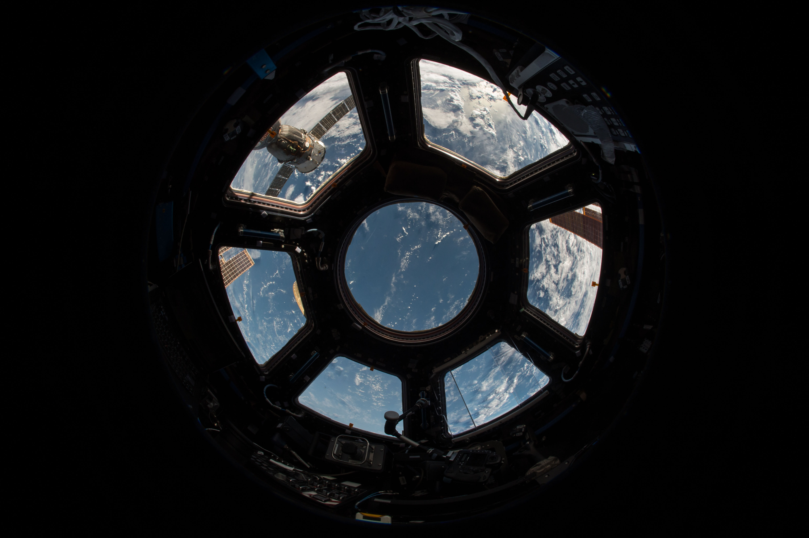

Most students in the science stream have once been great admirers of cosmology,particle physics and astronomy. These three topics are dependant on one another in our understanding of the universe. Usually we do not get the right mentors to guide us on how to ease ourselves into one of the most fascinating sciences. As an enthusiast myself I have seen people favoring popular science books on real informative ones. This website is a platform for real-time study of astronomy though notes and excercises. These are made after a thorough read of the prescribed astrophysics books as per cirriculum followed by universities worldwide.
My eureka moment was in the dead of night, the early hours of the morning, on a cold, cold night, and my feet were so cold, they were aching. But when the result poured out of the charts, you just forget all that. You realize instantly how significant this is—what it is you’ve really landed on—and it’s great!
- Jocelyn Bell Burnell Noted astronomer (discoverer of pulsars)
Space is for everybody. It's not just for a few people in science or math,or for a select group of astronauts.That's our new frontier out their and it's everybody's business to know about space.
- Christina McAuliffe Challenger Astronaut and Teacher